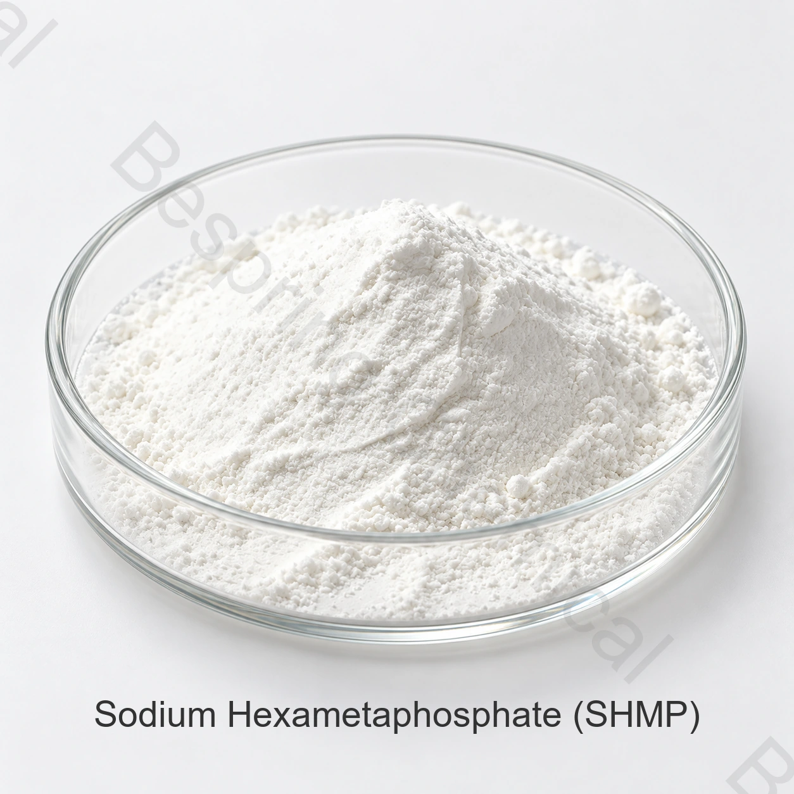

Identidad y grado
Identidad exacta, grado, concentración o forma, función de proceso, cantidad, embalaje, destino y documentos.
Química minera · Dispersante y secuestre
El hexametafosfato de sodio es una mezcla de fosfato condensada evaluada como una materia prima dispersante, secuestre y control de escala en sistemas de procesamiento de minerales.
Indique la composición exacta, función de proceso, contexto del mineral o del agua, cantidad, destino y documentos.

Descripción del producto
El hexametafosfato de sodio es una mezcla de fosfato condensada evaluada como una materia prima dispersante, secuestre y control de escala en sistemas de procesamiento de minerales.
El rendimiento depende del grado comercial exacto, mineralogía, liberación, pulpa y química de reciclaje, reactivos, equipo y estrategia de control aguas arriba y abajo. La selección y las condiciones de operación requieren ensayos representativos e ingeniería de planta.
Guía de compra
Compare el grado ofrecido, los documentos del origen de suministro y las condiciones de la oferta para su aplicación.
Identidad exacta, grado, concentración o forma, función de proceso, cantidad, embalaje, destino y documentos.
Compare la especificación acordada, la base activa o ensayada, COA representativo, clasificación de transporte, Incoterm y plazo de entrega.
Indique la mineralogía, etapa del diagrama de proceso, química de agua, conjunto de reactivos utilizado, respuesta de objetivos y protocolo de prueba.
Solicite SDS actuales, especificación acordada o TDS, métodos, COA de lote, trazabilidad y documentos específicos para fuentes.
Evaluación preliminar del proceso
Se trata de áreas de prueba, no recomendaciones universales, instrucciones de dosificación, garantías de recuperación o permisos de aprobación.
Identifique la función exacta del material en el proceso. Confirme su composición y su idoneidad para esa función antes de iniciar un ensayo de comparación de orígenes.
Evalúe los ensayos de molienda, dispersión o acondicionamiento de lodos a través de laboratorios y pilotos específicos para el agua o mineral, la especificación vigente acordada y los requisitos del sitio.
Evalúe los programas de limpieza de procesos o control de incrustaciones a través de laboratorios y pilotos específicos para el agua o mineral, la especificación vigente acordada y los requisitos del sitio.
Evalúe las operaciones de refinación y auxiliar específicas de cada sitio mediante laboratorio y trabajo experimental específico del mineral o del agua, la especificación vigente acordada y los requisitos del sitio.
Selección técnica
Evalúe la familia química exacta, la composición y el grado a través del laboratorio o el trabajo experimental específico del agua, la especificación vigente acordada y los requisitos del sitio.
Evalúe la función del proceso y la compatibilidad de las plantas a través de laboratorios y proyectos pilotos específicos para el mineral o el agua, la especificación vigente acordada y los requisitos del sitio.
Evalúe el contenido de agua, las impurezas y la forma física a través de laboratorios y obras piloto específico del mineral o del agua, la especificación vigente acordada y los requisitos del sitio.
Evalúe la SDS, el transporte, las emisiones, la descarga y los controles de residuos a través de laboratorios y proyectos experimentales específicos para el mineral o el agua, la especificación vigente acordada y los requisitos del sitio.
Documentación técnica
Solicite la especificación del origen ofrecido o la ficha técnica (TDS), con métodos analíticos, base de expresión y criterios de aceptación.
Solicitar la especificación actual firmada o TDS, SDS, métodos analíticos, COA representativo y COA del lote.
Confirme clasificación de peligros y transportes, embalaje compatible, segregación de almacenamiento, vida útil y controles de emergencia.
Consulte Libro de fuente de la EPA Hardrock-mining, el EPA ore-mining and dressing technical document, SGA contexto de procesamiento de minerales y NIH PubChem.
Nota del proceso de minería: Una identidad materia prima no establece recuperación, selectividad, dosis o aceptabilidad ambiental. Usar pruebas metálicas o de agua representativas, ingeniería calificada, permisos de sitio y controles de residuos controlados, efluentes, aire y trabajadores.
Almacenamiento y manipulación
Cuestiones relativas al comprador minero
El hexametafosfato de sodio es una mezcla de fosfato condensado evaluada como una materia prima dispersión, secuestre y control de escala en sistemas de procesamiento de minerales. La viabilidad debe ser establecida para el mineral específico, el agua, el diagrama de proceso y el emplazamiento.
CAS 10124-56-8; mezcla de fosfato de sodio condensado; vidrio, granular o grado de polvo—distribución de cadena confirmada. Indique la composición exacta, grado, concentración activa, forma física y límites de impureza crítica.
Solicite la especificación del origen ofrecido, la ficha técnica (TDS), los métodos de ensayo y un COA representativo. El COA del lote informa los resultados del suministro.
No. La selección de reactivos, la dosificación, el orden de acondicionamiento y los límites de control requieren ensayos representativos de mineralogía, metalurgia o tratamiento de agua, además de ingeniería de planta a cargo de personal cualificado.
Proporcione la identidad exacta, grado o concentración, función de proceso, contexto del mineral o del agua, límites críticos, cantidad, embalaje, destino, documentos, Incoterm y fecha de entrega.
Suministros relacionados
Examine el tratamiento de agua, lixiviación, flotación, fundición y refinación de familias químicas.
Consulte al equipo comercial sobre la especificación del origen ofrecido, la documentación, las muestras y las condiciones comerciales.
Examinar la contratación y el apoyo a las exportaciones para la adquisición internacional de productos químicos.
Suministro de reactivos mineros según especificaciones
Indique la identidad, grado o concentración, función de proceso, contexto de mineral o agua, límites críticos, cantidad, embalaje, destino y documentos.